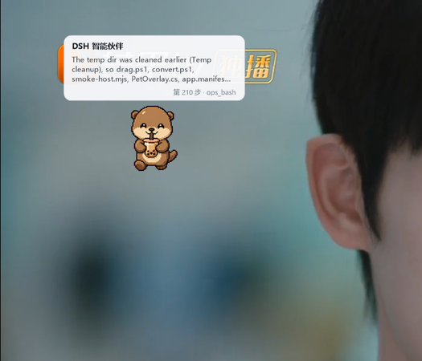
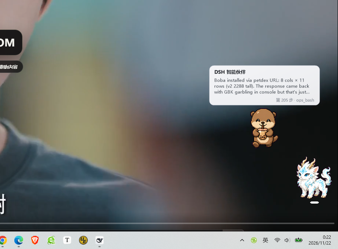
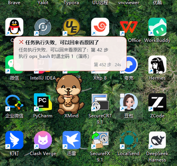
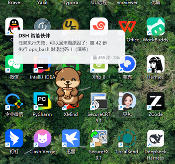
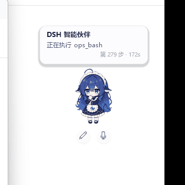
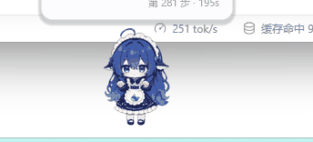
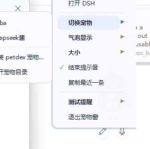
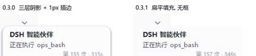
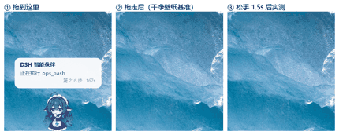
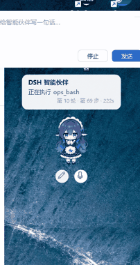

把 Codex 桌面的「迷你界面和智能伙伴」搬到 DeepSeek Harness：最小化也能看见对话进展，任务结束立刻知道，能用 petdex.dev 上的宠物，还能拖到屏幕任意位置。
Codex 与 Petdex Desktop 的思路可以拆成四件事，这也是本方案的参照系：
alwaysOnTop、transparent，尺寸跟着精灵走、位置由用户拖动，因此不会被主面板布局裁剪。1536×1872／1536×2288 的图，8 列 × N 行，每帧 192×208，一行一个状态，定时换帧。127.0.0.1:7777 起 hook 服务，POST /state 带 X-Petdex-Update-Token，宠物据此切行。这些结论来自安装包 app.asar 与运行时探针，不是推测：
| 约束 | 证据 / 影响 |
|---|---|
| Electron 主进程没有给插件窗口 API | lib/main.js 中 alwaysOnTop、transparent、setIgnoreMouseEvents 出现 0 次；setWindowOpenHandler 8 处全部 {action:'deny'} |
DSH Host 是 spawn 出来的子 Node 进程 | 入口 @deepseek-ai/dsh-desktop-host/lib/index.js，stdio: [ignore,pipe,pipe,ipc]；宿主插件 require('electron') 必然失败 |
| Host 服务目录没有 window / tray / screen | cordis_inspect_query 全量枚举确认 |
| 客户端插槽救不了场 | window.open 被拒；shell.overlay 虽在 frame 之上，但仍在 DSH 窗口内——窗口最小化就一起消失，拖动也出不了窗口 |
session/event · agent/status → PetModel 纯函数状态机 ·
ConfigStore 原子写配置 · PetHttpApi 挂 /x-dsh-pet/* ·
OverlaySupervisor 编译／启动／看护／清理
X-Pet-Token） ▲GET /state（行协议）· 用户操作 POST /config /ack /install ·
分层窗口渲染 + 逐像素命中测试 · 托盘菜单
为什么是 HTTP 轮询而不是 WebSocket / @Remote RPC：webServer.register() 是文档化能力；@Remote 在公开文档里没有第三方授权说明，不赌。400ms（忙碌）/1200ms（空闲）足够跟上"消息逐字追加"的观感，CPU 接近 0，实现简单、崩溃可自愈。所有接口强制 X-Pet-Token，token 每次启动随机生成，写在 ~/.dsh/pets/runtime.json。
浮层是 WS_EX_LAYERED | WS_EX_TOOLWINDOW | WS_EX_NOACTIVATE 的无边框置顶窗口——不进 Alt+Tab、不抢焦点。
| 机制 | 做法 |
|---|---|
| 合成 | 内部一张 32bpp ARGB Bitmap，气泡、圆角、文字、精灵帧都先画在它上面 |
| 上屏 | 手工把 BGRA 直通 alpha 转预乘 alpha 后拷进 DIB，再 UpdateLayeredWindow(ULW_ALPHA)。不能用 Graphics.FromHdc 直接 DrawImage——GDI+ 走 DIB 会丢逐像素 alpha |
| 点击穿透 | 同一趟循环顺手缓存 alpha，WM_NCHITTEST 逐像素判断，透明处返回 HTTRANSPARENT：只有宠物和气泡吃鼠标 |
| 不抢焦点 | WM_MOUSEACTIVATE → MA_NOACTIVATE，点宠物不会把 DSH 顶到后面 |
| 拖动 | 4px 阈值后进入拖动，坐标夹取 SystemInformation.VirtualScreen（虚拟屏幕而非 DSH 窗口），可拖出窗口、跨显示器；松手持久化 pos |
| DPI | manifest 声明 PerMonitorV2；行高用 font.GetHeight(g)+1 现算，150% 缩放不压字 |
| 锚点 | 以"宠物脚底中心"为锚：气泡长高时窗口向上扩、宠物不动；扩完 ClampWindow() 夹回当前显示器工作区 |

宿主订阅的是 durable session 事件（session/event），这是 DSH 里最可靠的一层：
| 事件 | 用途 |
|---|---|
user/message | "你上次的请求"、标题推导、新一轮起点 |
assistant/message（只取 stream !== true） | 气泡正文 = 最新一条正文；reasoning 段被过滤，避免把模型思考漏到屏幕上 |
tool/call · tool/result | 活动行"正在执行 X"、工具报错时的失败文案 |
turn/start | 清掉上一轮结论，进入 running |
turn/end | 任务结束：reason.kind 决定文案与成败配色，生成 alert |
step/start · step/end | 页脚"第 N 步 · Ns" |
agent/status | 兜底：agent 空闲时状态回落 |
turn/end 不是 listener 事件，它是 session/event 的 payload，只能读 event.type === 'turn/end'。approval/request 是 waterfall 事件，监听器必须 return next()，否则审批面板会静默失踪；dsh-pet 因此不监听它，改用 agent/status + 会话事件推导 waiting。session.header.parentSession 为空），否则每个子 agent 转身都弹一次提醒。
| DSH 状态 | 含义 | 精灵行 | 帧数 | fps |
|---|---|---|---|---|
idle | 没有进行中的任务 | 0 Idle | 6 | 6 |
running | 正在跑回合 | 7 Running | 6 | 8 |
waiting | 等你确认 / 回答 | 6 Waiting | 6 | 5 |
failed | 本轮失败 / 中断 | 5 Failed | 8 | 8 |
done | 完成但提醒未确认 | 8 Review | 6 | 5 |
| 拖动中 | 跟随鼠标方向 | 1 RunRight / 2 RunLeft | 8 | 14 |
| 新提醒 2.2s | 庆祝跳跃 | 4 Jumping | 5 | 8 |
| 有未确认提醒 | 招手等你 | 3 Waving | 4 | 6 |
SetRow() 只在行真的变化时才重置帧号——早期版本每次轮询都归零，动画每 400ms 卡一下。
宠物包 = pet.json + spritesheet.webp（或 .png）。校验：宽能被 8 整除、帧宽 ≥64、帧高 208、行数 ≥9；社区 v2 图集为 1536×2288（8×11）。
素材获取走 petdex 自己的安装脚本——站点没有公开 JSON API（/api/pets/* 返回 401），这是最稳的接口：
GET https://petdex.dev/install/<slug> → text/x-shellscript
curl -fsSL -e "https://petdex.dev/" -o "$PET_DIR/pet.json" 'https://assets.petdex.dev/.../petjson.json'
curl -fsSL -e "https://petdex.dev/" -o "$PET_DIR/spritesheet.webp" 'https://assets.petdex.dev/.../sprite.webp'宿主用正则把它解析成「文件名 → URL」，自己带 Referer: https://petdex.dev/ 下载（90s 超时、最多 24MB、重试 2 次）。
BitmapDecoder → PngBitmapEncoder 得到 RGB 黑底，宠物画出来是个黑方块。必须在中间插一层 FormatConvertedBitmap，DestinationFormat = Bgra32，再编码——这是同一份"转换契约"，宿主与调试脚本都遵守。
~/.dsh/pets/boba/spritesheet.png 为 1536×2288 RGBA，安装即切换、无需重启。同一个结束事件，走四路提示，任何一路都可能被用户忽略，四路一起才稳：
Jumping 庆祝 2.2s，随后成功播招手、失败播 Failed 行，直到你确认。SystemSounds.Asterisk、失败 Hand，可在托盘菜单关掉。BalloonTipClicked → ack），不必去点宠物。
| 路径 | 内容 |
|---|---|
~/.dsh/pets/config.json | {pet, scale, bubble, sound, toast, lang, pos}，tmp + rename 原子写、串行化 |
~/.dsh/pets/<pet>/ | pet.json + spritesheet.webp + 转换后的 spritesheet.png |
~/.dsh/pets/bin/PetOverlay.exe | 首次运行用系统 csc.exe 编译，源码更新自动重编 |
~/.dsh/pets/runtime.json | {token, prefix, host}：本机探针与浮层都用它，不写死路径 |
~/.dsh/pets/logs/ | host.log（宿主）+ overlay.log（浮层） |
位置以物理像素保存；重启、换宠物、换缩放都回到原位；「重置位置」回到当前屏幕右下角，而不是主屏。

PetOverlay.exe，宿主自动重启它，宠物、缩放与位置全部复原（同一坐标）。| 问题 | 处理 |
|---|---|
| 单实例 | 浮层命名互斥量 Local\DshPetOverlay.SingleInstance；宿主启动前 taskkill 旧进程，避免"两个宠物" |
| 编译失败 | 只写日志并把 overlay 标成 unavailable，DSH 照常工作 |
| 宿主挂了留孤儿 | 浮层连续 45s 拿不到状态即自行退出；宿主侧异常退出自动重启（≤5 次） |
| 卸载不干净 | ctx.effect 清理函数逐个 try/catch（早期一个 TypeError 就会跳过路由注销，永久占住前缀） |
| 热重载前缀残留 | 自动改用 /x-dsh-pet-2…，实际前缀写进 runtime.json 并通过 --prefix 传给浮层 |
| 非 Windows | 插件加载后写一条日志即返回，不做任何事 |
已知限制：仅 Windows 提供浮层；气泡宽度固定 300px（可关）；混合 DPI 多屏切换位置可能偏一点（拖一下即可）；热重载后旧实例的前缀路由会残留，重启 DSH 即回到单一 /x-dsh-pet。
| 验收标准 | 证据 |
|---|---|
| 最小化能看到对话内容 | img/03-minimized.png：DSH 窗口 IsIconic=True，宠物与气泡仍在桌面且内容持续更新 |
| 结束时有明确提示 | img/02-alert.png、12-alert-success.png、13-alert-failed.png；日志 alert shown id=… kind=… |
| 能加载 petdex 宠物 | img/07-boba.png；boba/spritesheet.png = 1536×2288 RGBA；日志 已安装 Boba / 8 列 × 11 行 · 192×208 |
| 可拖到全屏任意位置 | img/04-dragged.png；config.json 记录 pos；日志 mouse down … / drag to … |
| 配置可保存并复现 | img/14-restart.png：杀掉浮层后自动重启，状态全部复原 |
回归：node --test test/ — 24 条用例，覆盖状态机、路由前缀、宠物解析与失败演练。
这一轮把「像 Codex 那样用」补齐，也修掉了第一轮遗留的三个真 bug。逐条给结论。
第一轮只靠「连续 45 秒拿不到状态就自己退出」看门，宿主退出后宠物会在屏幕上干站 45 秒。现在宿主把
process.ppid 与 process.execPath 交给浮层（--dsh-pid / --dsh-exe），
浮层每轮先用 OpenProcess + GetExitCodeProcess 判断宿主是否 STILL_ACTIVE，一没就退。
实测 --dsh-pid 999999 → 0.22 秒退出，日志 DSH 已退出，浮层退出。
反过来，DSH 关窗口 ≠ 退出：Electron 里点关闭走 mainWindow.hide()（只有 isQuitting() 才 close()），
所以窗口隐藏后宠物必须留着——这条顺带解释了下面第 ③ 条的根因。
托盘原本只做三件事，都有替代：系统气球 → 浮层自己的暖色气泡 + 提示音 + 跳跃/招手动画；菜单入口 → 宠物右键菜单；
退出入口 → 菜单最后一项。于是 NotifyIcon 代码整体删除（源码计数 0），notify/toast 配置退役。
| 根因 | 细节 | 修法 |
|---|---|---|
| 只认可见窗口 | 旧实现 if (!IsWindowVisible(h)) return;，而 DSH 关窗口是 hide 到后台，窗口从此不可见 → 永远「找不到窗口」 | 按 pid 枚举、不看可见性，用打分挑主窗口（有标题 +10 / 可见 +5 / 非最小化 +2） |
| 抢前台被拒 | 浮层是 WS_EX_NOACTIVATE 工具窗，从不拥有前台，SetForegroundWindow 被静默拒绝；旧代码没检查返回值，日志照样打「focused」 | 先 ShowWindow(SW_SHOW/SW_RESTORE)，再 AttachThreadInput 借前台输入队列，重试 3 次并校验 GetForegroundWindow()==hWnd |
| 兜底 | 主窗口真被销毁时无处可聚焦 | Process.Start(dshExe) → Electron second-instance 回调自动 restore/show/focus |
实测三种状态（正常 / IsIconic=True 最小化 / ShowWindow(SW_HIDE) 隐藏）下单击宠物都能拉起 DSH，
日志 focused DSH window (click) hwnd=…。
WM_LBUTTONUP 且没拖动 → 先 PostAck()（有提醒就当「我知道了」）再 FocusDsh("click")。
单击不再切换气泡展开——气泡按时间自动收起。
指针进入窗口 → 顶部浮出 78×34 胶囊工具条（✎ / 🎤），离开 300ms 收起。✎ 打开贴在宠物上方的圆角输入框
（贴屏幕顶时自动翻到下方），Enter 发送 / Shift+Enter 换行 / Esc 关闭。发送走 POST /say，宿主用
sessionController.prompt({requestId, sessionId, mode:'queue', content:[{type:'text', text}]}, AbortSignal.timeout(15s))
把这句话作为一条用户消息投进当前会话——和你在输入框打字同一条链路。🎤 用 SpeechRecognitionEngine +
DictationGrammar，Hypothesized 把草稿灰字实时填进输入框，停 3 秒自动结束；
编译期 #define:VOICE + GAC 的 System.Speech.dll，没有引擎时只降级提示。
不用系统 ContextMenuStrip。OverlayMenu 是一个分层窗口自己画：主列 + 子菜单是同一窗口的两列
（子菜单开成子窗口会让父窗口失活、菜单自关）；底色高不透明度 + 1px 描边 + 三层递减阴影，深浅色跟随
AppsUseLightTheme；子菜单靠右缘时整体左翻（窗口左边界反向抵消）；悬停用 90ms 定时器轮询光标——
置顶无激活窗口不一定收得到 WM_MOUSEMOVE；Esc 逐级关闭。
调试记录：左翻后主列文字整段消失，根因是 DrawString 的矩形宽度写成
rect.Width - textLeft 而 textLeft 是绝对坐标，偏移一大宽度就变负；改成 rect.Right - textLeft 即好。
bubbleMs 默认 5000（菜单可选 3 / 5 / 8 秒 / 一直显示 / 关闭气泡），alertMs 默认 30000。
内容「变没变」用指纹判断，指纹里剔掉每秒跳动的 第 N 步 · 45s（StripElapsed），否则计时一刷新气泡就重新点亮、永远收不起来。
松手 → POST /config {pos:1,posx,posy} → 原子写 config.json；启动按保存锚点还原，
尺寸变化时按「底边中点」重新摆位并用 Screen.WorkingArea 夹回可见区，WM_DPICHANGED /
WM_DISPLAYCHANGE 触发重新布局，插拔显示器不会把宠物丢到屏幕外。
| 项 | 说明 |
|---|---|
| 深色主题 | 菜单 / 气泡 / 工具条按系统深浅色切调色板 |
| 错误可见 | 编译、网络、发送失败以红字进气泡或输入框，不再只写日志 |
| 结束时长提示 | alert.age：提醒超过 1 分钟，正文追加「N 分钟前结束」 |
/pet 补全 | 新增 bubble <秒>、say <内容>、test failed |
| 中文换行 | 正文按 CJK 逐字断行（旧版按空格切，中文整段溢出成一行省略号） |
| 断开可见 | 宿主失联 4 次后气泡写「DSH 已断开，重连中…」 |
| 图标重绘 | 蓝色徽章 + 对话气泡脸，tools/make-icon.py 出多尺寸 app.ico |
| 需求 | 结论 / 证据 |
|---|---|
| 宠物随 DSH 生死 | --dsh-pid 999999 → 0.22s 退出；重新启用插件自动重启并回到原位置（img/22-restored-0.2.png） |
| 去托盘图标 | NotifyIcon 计数 0，通知区无残留 |
| 「打开 DSH」bug | 两处根因定位并修复；三态实测均能拉起 |
| 点击宠物打开 DSH | 单击即拉起，日志 focused DSH window (click) |
| 就地写字 | say result: 已发送；宿主日志 浮层消息 → <sessionId>：…；当前会话收到该消息 |
| 语音 | SAPI 两引擎可用，#if VOICE 编译通过；无引擎时降级提示 |
| 菜单美化 | img/20-menu-0.2.png：圆角半透明、真 ✓、子菜单左翻 |
| 气泡时长 | bubbleMs=1000 时 4 秒后气泡与工具条消失、宠物留在原地 |
| 位置持久 | 拖到左下写 pos，禁用→启用后原位复原（img/22-restored-0.2.png） |
| 最小化仍可用 | img/23-minimized-alert-0.2.png：IsIconic=True 时宠物与失败提醒气泡都在桌面 |
这一轮的重点不是加功能，而是回答三个「为什么」：为什么会卡死、为什么菜单点不动、 为什么最外面那一圈框要去掉。所有结论都带证据行。
AttachThreadInput 把浮层的线程缝进了 Electron 的输入队列0.2 为了让「打开 DSH」在被系统拒绝抢前台时也能成功，用了这套写法：
AttachThreadInput(myThread, foregroundThread, true); // 借前台窗口的输入队列 SetForegroundWindow(hWnd); AttachThreadInput(myThread, foregroundThread, false); // 3 次重试，每次间隔 80ms
foregroundThread 通常就是 Electron 的 UI 线程。Attach 之后两条线程共享输入队列，
Electron 的窗口消息有可能被浮层线程取走并派发——Electron 的界面就离开了自己的 UI 线程，
表现就是「随机卡死、界面完全不动、但进程还在」。随机性来自：只有「抢前台被拒」这条分支才会 Attach，
只挂几十毫秒，只有恰好和 Electron 的消息处理撞上才出事。
更糟的是兜底：Process.Start(dshExe) 会在同一份 userData 上再拉起一个 Electron 实例。
| 证据 | 内容 |
|---|---|
| 代码层面 | 0.1 里没有 AttachThreadInput、也没有 relaunch 兜底；0.2 才有，卡死也是 0.2 才出现 |
overlay.log | focus refused (click), falling back to relaunch + relaunched DSH exe，时间 03:38:58 / 03:41:33 / 03:48:21 |
host.log | 卡死期间宿主一直健康：只有 3 条孤立 poll failed，从没出现 DSH 已断开 / host unreachable ⇒ 卡住的是 Electron 进程，不是 Node 宿主 |
| Windows 事件日志 | 03:20–04:05 没有 WER 的 AppHang / AppError 记录 ⇒ 不是崩溃，是进程内挂住 |
修法（两条路径全删）：Activate() = ShowWindowAsync → SetWindowPos(HWND_TOP, …NOACTIVATE)
→ BringWindowToTop → SetForegroundWindow → 60ms 后校验 GetForegroundWindow()；
失败就 FlashWindowEx 让任务栏闪一下，不再重启 DSH，也不再 Attach。
grep -c AttachThreadInput native/*.cs = 0。
现象：菜单开着，点「打开 DSH」没反应，宠物反而被单击了。现场探针很反直觉——
WindowFromPoint() 明明返回的是菜单窗口，z 序也对。
WM_LBUTTONDOWN: captureBefore=190123676 capture now=190123676 self=190123676
宠物窗口在点击之前就已经握着鼠标捕获。持有捕获的窗口会直接收到后续鼠标消息，
WM_NCHITTEST 根本不会再发出去——所以菜单永远等不到 mouse-up。根因是旧代码在
每次 WM_LBUTTONDOWN 就 SetCapture，而只在 if (_dragging) 分支里 ReleaseCapture：
只要有一次 up 丢失，捕获就永久挂住。
三层修法：
// 1) 懒捕获：只有真的移动超过 4px 才开始抢鼠标
if (_dragMoved) Native.SetCapture(Handle);
// 2) 自愈：每 120ms 检查一次，捕获在自己手上但没在拖动就释放
void ReleaseStaleCapture() { if (!_dragging && Native.GetCapture() == Handle) Native.ReleaseCapture(); }
// 3) 让位：菜单或写作窗开着时，宠物窗口对命中测试直接返回透明
if ((_menu != null && !_menu.IsDisposed && _menu.Visible) || IsComposing) return (IntPtr)Native.HTTRANSPARENT;
实测：menu mouseup at 71,46 button=Left → menu pick open →
focused DSH window (menu)；再点「气泡显示 → 8 秒」→ 配置 bubbleMs: 8000；
点「切换宠物 → Boba」→ 精灵热切换 1536×2288。拖动仍然正常（懒捕获不影响拖拽）。
布局从 [气泡] → 宠物 改成三段：[动作行] → [气泡] → 宠物，动作行是宠物自己的区域，
不再是浮在气泡上的白胶囊。窗口贴到底边时自动翻到气泡上方：
_actionsBelow = area.Bottom - _anchorY >= actionsH + gap + pad; ApplyAnchor(): y = _anchorY - _petBottomOffset; // 始终以宠物底边为锚
「最外面的框」就是那枚白胶囊：现在 DrawToolbar 改名 DrawActions，
每个按钮只画自己的柔和圆底（常态 alpha 214 / 悬停 248 + 1px 投影），图标换成
Segoe MDL2 Assets 的 \uE70F（铅笔）/ \uE720（麦克风）。
气泡也去掉常驻 1px 描边，改成三层半透明圆角阴影，只有「结束提醒」态才画暖色/红色描边。
顺带修掉一个渲染坑：TextRenderingHint 必须是 AntiAliasGridFit。
分层窗口是逐像素 alpha，ClearType 的次像素彩边会被原样烧进位图（字周围出现蓝红虚影）。



config.json 的读写成对加固| 时机 | 动作 |
|---|---|
| 写之前 | 若没有 .bak，把当前值复制成 config.json.bak（首次写盘的原始值） |
| 每次写之前 | 把当前值复制成 config.json.prev（上一次成功值） |
| 写入 | config.json.<pid>.tmp + rename（原子替换，不会出现半个文件） |
| 读失败 | 原文件另存 config.json.corrupt-<ISO>；先试 .bak，再试 .prev；都失败才用默认值，并把过程写进 host.log |
| 回滚之后 | 立刻 _writeRecovered() 把盘上的坏文件改回合法 JSON（跳过 .bak/.prev 轮转，避免污染备份） |
爆炸半径：只有 ~/.dsh/pets/ 下这三个文件。config-store.js 里没有任何指向 DSH 会话库
（~/.dsh/storages/session_projcache/）的路径。实机演练（把 config.json 截断成非法 JSON）→
host.log 记下留档路径并从 .bak 恢复，重启后配置、位置、宠物都原样。
宿主：setInterval(2000) 里比对预期节拍，超 1500ms 记 loop lag <n>ms；
浮层：后台线程每 2s Invoke 心跳，超 1500ms 记 ui stall <n>ms；
守护：子进程活过 30s 就清零重启计数，另给 /pet restart 手动重拉。
两轮稳态采样：① 0.3s 间隔连续请求 /state 共 700 次（210 秒），没有一次超过 1 秒
（{"total": 210.1, "spikes": []}）。历史观察到的 8.1s / 6.3s / 5.9s 三条 loop lag
全部落在 浮层已启动 之后 6–9 秒——浮层刚起来解码 3.5MB 精灵图、Defender 在扫新 exe，
宿主只是没抢到时间片。稳态不复现，这与「0.2 卡死是 Electron 侧被 AttachThreadInput 拖住」的结论一致：
真卡死时界面完全不动，而这里只是看门狗抖了几秒。② 1 秒间隔连续 10 分钟共 590 次，
{"requests": 590, "seconds": 600.5, "spikes": []}，零尖峰；这一轮还跨了一次系统休眠——
机器睡一夜醒来后浮层进程仍在、/state 立刻有响应、58 个会话缓存 JSON 全部可解析。
| 需求 | 结论 / 证据 |
|---|---|
| 卡死根因 | AttachThreadInput + relaunch 兜底，两条路径 0.3 全部删除（源码计数 0） |
| 不再丢会话 | test/config-store.test.mjs 6 个用例 + 实机坏文件演练：留档 → 从 .bak 恢复 → 立刻写回合法 JSON |
| 动作行在下方 | img/26-actions-below-0.3.png；贴底边翻转 img/27-actions-flip-0.3.png |
| 去掉外层框 | 无白胶囊、无常驻描边；气泡只剩柔和阴影，提醒态才描边 |
| 菜单可点 | menu pick open / menu pick bubbleMs:8000 / menu pick pet:boba（img/28-menu-sub-0.3.png） |
| 键盘（补充路径） | 菜单不抢焦点，只有它恰好持有焦点时才会收到按键；不当主路径，也没有为此挂全局键盘钩子 |
| 回归 | node --test test/ 32 个用例全绿；csc -warn:4 0 警告 |
这一轮用户明确否掉了上一轮"AttachThreadInput 是根因"的结论，要求先在真机复验再改。
四条按"问题 → 证据 → 改法 → 怎么验证"给结论。
结论：不是宠物浮层把 DSH 拖住。阻塞来自 @deepseek-ai/dsh-hmr 的
reconcileProfile()——插件清单变化时它同步 realpathSync/lstat
遍历整个 profile 目录树，单次 1.0–1.8 秒，累加到 2.3–8.2 秒。
| 证据 | 内容 |
|---|---|
| 4 份 CPU profile | lag-2026-11-22T09-14-08-404Z 2287ms、09-15-57-064Z 2578ms、09-16-05-484Z 6355ms、09-28-04-083Z 5034ms |
| inclusive 栈（四份一致） | apply → dsh-hmr/lib/index.js:120 → reconcileProfile :1324 → mappedDirectories :1432 → realSpellings :1445 → realpathSync node:fs:2781 → lstat 1.0–1.8 s |
| 触发条件 | refresh()（lib/index.js:852）只在 profile.patchPath、profile.home/cordis.patch.yml、profile.dir/package.json 变化时触发——即"启用/停用/安装插件"和 DSH 启动 |
| 为什么"随机" | 平时对话、拖拽、写作都不触发；只有动插件才触发，所以感知上像随机 |
| 对照组 | 稳态 240 s / 250 ms 探针 937 次：DSH UI 线程最长 17 ms、/state 最长 862 ms、0 失败 |
| 对照组 2 | 往 ~/.dsh/pets/、工作区根、插件包目录写文件 → 全部无 loop lag |
| 对照组 3 | plugin_manager set_bundle 重载 → 必然 3.2–5.5 s 阻塞 |
| Windows 事件日志 | 同期无 WER Application Error / AppHang ⇒ 进程内挂起，不是崩溃 |
完整分析见 lag-analysis.md。宿主所有请求路径都没有同步 fs /
child_process；浮层也不碰 DSH 的进程与线程（0.3 起不再 AttachThreadInput、
不再 Process.Start）。
顺带修掉两个会加重观感的问题：ComposeWindow 构造里 BeginInvoke 早于句柄
（正是"点麦克风没反应"）；DSH 卡住时气泡停在旧内容，现在连续 4 次轮询失败就显示
DSH 已断开，重连中…。
DSH 侧才能真正消除：profile 目录改非符号链接布局，或把 ~/.dsh/profiles
加进 Defender 排除；dsh-hmr 的遍历改成异步/增量后这个卡顿就不存在了。
窗口本身 style=0x16010000（caption=False border=False thick=False）、
ex=0x08090088，沿窗口下边界内外像素差 0——没有窗口边框，
也没有矩形填充。用户看到的"框"是气泡外面那圈三层圆角阴影加 1px 常驻描边。
改法：删掉阴影栈与常驻描边，气泡改单层扁平半透明填充；提醒态靠填充色 + ✔/✕ 区分。
另外把文字渲染从 ClearTypeGridFit 换成 AntiAliasGridFit——分层窗口逐像素 alpha，
子像素抗锯齿会把彩边烧进位图。

拖动分支只改 Location，PushLayered() 还等 80 ms 的动画定时器，
窗口挪走后屏幕上留下的是上一次 UpdateLayeredWindow 的内容。修法：
Location = ClampWindow(...) 之后立刻补推一帧，8 ms 节流（_dragPushAt），
松手再 Relayout。
验证工具 tools/ghostcheck.py：先用干净基准图对连拍帧做分块统计，200 帧里单帧最多 2 块
（气泡 + 宠物，正常形态），没有出现第三块；松手 1.5 秒后的画面与基准逐像素一致
（bbox=None，最大通道差 0）。

BeginInvoke 早于窗口句柄overlay.log 里 8 次
InvalidOperationException: 在创建窗口句柄之前，不能在控件上调用 Invoke 或 BeginInvoke。，
栈是 ComposeWindow..ctor ← PetForm.OpenCompose ← PetForm.WndProc——正是点 🎤 的路径。
改法：构造里只记 _voicePending，ToggleVoice() 挪到 OnShown；
语音不可用时按钮变灰并给红字原因。

src/profiler.js（DSH_PET_PROFILE=1 或 ~/.dsh/pets/profile.on 时启用）：
monitorEventLoopDelay 20 ms 采样 + setTimeout 心跳，单次阻塞超过 1500 ms 就停表写
lag-<ISO>.cpuprofile 并打印 loop block <n>ms profile=… top=<函数@文件:行>。
V8 采样线程独立于事件循环，所以"卡死那几秒"的栈也能被记下来。
tools/probe.ps1 用 SendMessageTimeout(WM_NULL, SMTO_ABORTIFHUNG) 分别量
DSH 主窗口与浮层窗口的 UI 响应并叠一个 /state 时延写 CSV；
tools/soak.ps1 按固定序列跑长跑。
| 需求 | 结论 / 证据 |
|---|---|
| ① 卡死根因 | dsh-hmr reconcileProfile 同步遍历；4 份 profile 栈一致；对照 937 次探针最长 17 ms |
| ② 外层框 | 窗口无边框（样式 + 像素双验证）；删阴影/描边后 32/33/34 三张对比图 |
| ③ 拖动残影 | 位置更新后 8 ms 内补推一帧；200 帧无第三块、松手逐像素一致（35） |
| ④ 麦克风 | 8 次 InvalidOperationException → 改 OnShown 启动；36 可见录音态 |
| 回归 | node --test test/ 35 个用例全绿；csc -warn:4 0 警告 |
| 最小化可用 | DSH iconic=True 时宠物与气泡照常（37-minimized-alert-0.3.1.png / 38-pet-minimized-0.3.1.png） |
| 会话不丢 | 只读会话目录；配置改动走 .bak/.prev/坏文件留档 |